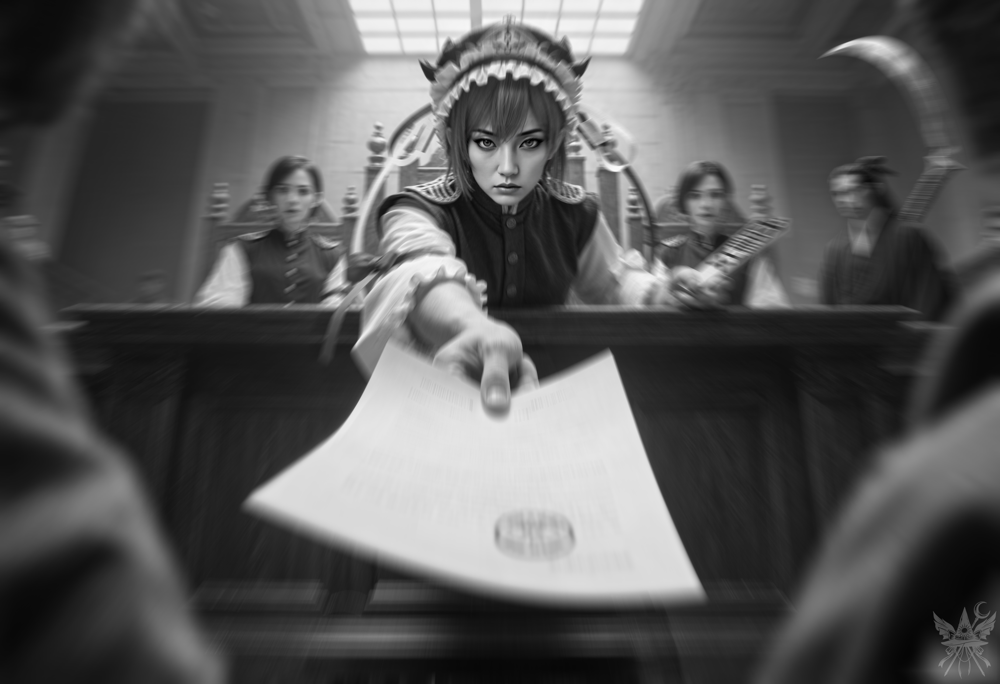

第67章 裁判
キクリによって喉のチャクラ、ヴィシュッダを完全に開発されたことで、神聖な能力「カメレオン」を選ぶのは至極当然の帰結だった。他の能力も魅力的ではあったが、使い慣れた力の延長にあるそれが最も自然に馴染む。何より、他者の姿を借りる術は、今後の立ち回りで確実に役立つはずだ。
奇跡の魔女フレデリカは、いつものように梅茶の香りを漂わせながら、能力の起動について淡々と語った。「チャネル展開」という手順を踏むこと。一日一回しか使えず、再使用には二十四時間を要すること。手始めに、詳細に姿を思い描ける相手で試すよう促されたが、疲労の極致にあった脳裏には、目の前にいる魔女の姿しか浮かばなかった。
意識を集中させると、変身は瞬時に完了した。鏡の前に立てば、そこにはフレデリカと寸分違わぬ己の姿がある。完璧な擬態だった。
「幻想郷に行かなきゃいけない用事があるから、明日戻るわ」
そう言い残し、フレデリカは幻のように姿を消した。魔法を解き、泥のような疲労を癒すため、ようやく休息を取ることにした。
午後四時。怒涛の一週間を思えば、今日はもう何も考えたくなかった。
冷たい石造りの廊下を歩いていると、くるみとすれ違った。無事の帰還を喜ぶ彼女と短い言葉を交わした後、図書室の場所を尋ねる。案内された空間は、かつて訪れた静かなる神殿のそれを遥かに凌ぐ広大さだった。
二時間ほど書棚の間をさまよい、埃っぽい古代の写本や歴史書、魔法の指南書に目を通す。外の世界の書物もいくつか紛れ込んでいたが、その大半は古典を装った退屈で仰々しい恋愛小説だった。官能的な描写ばかりが悪目立ちする中身に辟易するが、この屋敷の女主人の趣味を思えば妙に納得がいく。
やがて、歴史書の山から幻想郷について記された分厚い一冊を引き抜き、貪るようにページをめくった。人間界の一部でありながら、神話の産物とされる者たちが跋扈する世界。妖怪の生態に関する記述を追い、博麗大結界の項目に差し掛かる。
（どこかで聞いた名前だ……）
一八八四年、日本の片隅が魔法の壁によって隔絶され、独自の理で回り始めたという。
硬く座り心地の悪い椅子で文字を追い続けていたことに気づき、悪魔の司書に本を借り出す許可を求めた。
メイドに案内された客室で、見知らぬ天井を見上げる夜にも少しずつ慣れてきた。これで三つ目の宮殿だ。
用意された寝着に袖を通し、天蓋付きのキングサイズのベッドに沈み込む。シーツの滑らかな感触を味わいながら本を開いたが、夢中で活字を追ううちに、窓の外はすっかり濃い闇に沈んでいた。身を起こしてパチパチと微かな音を立てるランプの火を落とし、毛布にくるまって枕を抱き寄せる。八月末だというのに、石造りの屋敷にはひんやりとした空気が淀んでいた。
まどろみの中で、なぜか胸の奥がざわつき始めた。
思考の断片がとめどなく浮かんでは消え、閉じた天蓋の隙間から、青白い光が微かに漏れ入ってくるのが見える。
（もう真夜中……？ 月明かりが差し込んでいるのかしら……？）
身をよじって天蓋のカーテンを少し開けた瞬間、呼吸が止まった。
包み込んでいたはずの屋敷の匂いは消え失せ、代わりにむせ返るような生臭い花の香りが鼻腔を突いた。肌を刺すのは、ただの夜風ではない。水気を帯びた、骨の髄まで冷え切るような死の気配だ。
色彩が抜け落ちたかのような灰色の静寂の中、足元に群生する花だけが、不気味なほどの生命力を放って周囲の冷気を際立たせている。遠くから、規則正しく水を掻く櫂の音だけが、ひたひたと響いてきた。
脱ぎ捨ててあったスリッパをつっかけ、足元の覚束ない土を踏みしめる。「魔法の光」の呪文を紡ごうとしたが、喉の奥で魔力が霧散し、指先一つ光らない。暗闇に目が慣れてくると、延々と続く川のほとりに咲き乱れているのが、すべて彼岸花であることに気づいた。
（どこだ、ここは……？ 地獄？ 魔界……？ どうやってこんな場所へ……？）
川のぬかるんだ岸辺から、抑揚のない冷ややかな声が鼓膜を打った。
「アルゲアス殿、あなたを逮捕します」
（……は？ なぜ私の名字を……？）
目を凝らすと、小舟を操る女の輪郭が月明かりに浮かび上がった。
「ええ、あなたのことです。直ちに船へお乗りください」
（冗談じゃない。私を誰だと思っているの。やすやすと従うわけがないでしょう）
「あなたは一体誰ですか？ なぜ私を逮捕するのです？」
「審議会の秘密警察、死神、小野塚小町です。抵抗は無駄です。さもなくば、実力を行使いたします」
（死神……？ 私が……死んだ？ あのベッドで……？ バカげている……！）
「説明を求めます。一体何が起こったのですか？」
「説明は許可されていません。審議会の建物へ到着してからになります。直ちに船へお乗りください」
小町の言葉は徹頭徹尾、事務的な冷たさに覆われていた。
「納得できません。説明もなく連行する権利など――」
反論を試みた瞬間、見えざる暴力的な力によって体が宙に浮き、荒々しく小舟の底へと引きずり込まれた。指一本動かすことができない。
「離しなさい！ そんな権利はありません！ 私には力のある味方がいます！ 神綺様も、キクリ様も……！」
「無駄な抵抗はおやめなさい。もうすぐ到着しますよ」
淡々とオールを操る小町は、水面に反射する美しい月明かりに目を向けることもなく、ただひたすらに舟を進めた。
抵抗する気力すら削ぎ落とされるような、絶対的な静寂。冷たい霧が肌にまとわりつき、頭上の雲の切れ間から覗く星空の冷気が、底知れぬ絶望となって胸にのしかかる。目の前に座る死神の表情には何の感情も浮かんでおらず、ただの「荷物」を運ぶかのようなその冷徹な態度が、逃れられない運命の重圧をありありと突きつけていた。
喉のチャクラに魔力を集め、目の前の人物に叩き込もうと試みる。だが、ほんの少し筋肉を動かそうとしただけで全身が鉛のように重のしかかり、呼吸すらままならない。小舟から身を投げ出そうとする意志も、不可視の壁に阻まれて霧散した。
（この狂騒は、まだ終わらないというの……。ここは三途の川？ ならば、これから裁きを受けることになる。一体何の罪で？ 人肉を食べたこと……？ いや、メニューにはそう書かれていなかった。嘘をついてスパイ行為をしたこと……？ あれは身を守るためだ。禁止薬物の使用……？ 状況把握に必要不可欠だった。レティのルビーを盗んだこと……？ 彼女は世界を麻薬漬けにしている悪党だ。どれもこれも言い訳に過ぎない……。どんな罪に問われてもおかしくない。……仕方ない、その場で弁明するしかないか……）
三十分ほどが永遠のように感じられた頃、ようやく動悸が収まり、川の両岸に揺らめく無数の灯籠の明かりを眺める余裕が生まれた。小舟が速度を落とし、岸辺に寄り寄せられる。
そこにあったのは、想像していた荘厳な宮殿などではなく、飾り気のない四角い窓が規則正しく並ぶ、ただの巨大な箱のようなコンクリートの塊だった。
「……ここ、刑務所……？」
小町は小さく鼻を鳴らした。
「私もそう思うわ。もっとも、ここは閻魔大審議会の裁判所だけれど。……着いたわ、降りなさい」
命じられるままに舟を降りる。小町は船底から巨大な鎌を拾い上げ、背負うようにして岸へ上がると、無言で手招きをした。その背中を追い、薄暗い建物の入り口へと足を踏み入れる。
内部に入り、ようやく自分を捕らえた相手の姿をはっきりと認識した。ツインテールに結われた赤い髪と、張り詰めたような長身。死神というよりは舞台の上のアイドルのようにも見える出立ちだが、その瞳には尋常ではない疲労の色が濃く滲んでおり、こちらに向けられる視線には一片の温度もない。彼女はただ、自身の業務を機械的にこなしているだけだ。そう理解したところで、胃の底に澱む不安が晴れることはなかった。
「逃げることはできません。どこにも行けません。おとなしくついてきなさい」
短い廊下の先で、小町が事務的に言い放つ。
「いつになったら説明してもらえるんですか？」
「まずは書類を記入してもらいましょう。そうすれば、閻魔に会えるわ」
促されるまま窓口へ向かうと、生気を失ったような女性職員が一枚の用紙を差し出してきた。申請書らしきその紙には、氏名、生年月日、住所といったありふれた項目が並んでいる。咄嗟に偽名を書き込もうとしたが、ペン先が紙に吸い付いたように動かず、まるで意思を持っているかのように抵抗した。職員の刺すような視線を感じ、仕方なく真実を記す。
無造作に印鑑が押され、「本人確認」のために三階へ行くよう指示された。背後には大鎌を携えた監視者が立っている。従う以外の選択肢はない。
壁の塗装はあちこちで剥がれ落ち、ひどいカビの臭いが鼻を突く。廊下を行き交う安物のスーツを着た職員たちは、揃いも揃って生ける屍のようだった。崩れ落ちそうな階段を上り、三階の突き当たりにある小さな部屋に入ると、先ほどの職員と瓜二つの女が冷酷な目でこちらを見据えていた。
「一体何をしているのですか？ 到着の印鑑を押してもらうはずでしょう？ 書類を見せてください」
差し出した書類を一瞥し、女は吐き捨てるように言った。
「刻印がありませんね。通せません。下に降りて、刻印を押してもらってください」
振り返ると、そこに小町の姿はすでになかった。重い足取りで階下に戻り、最初の窓口へ再び書類を差し出す。
「一体何を考えているのですか？ もう印鑑を押したでしょう？ 三一四号室へ行ってください」
「でも……この印鑑ではダメだと言われたんです……」
理不尽な扱いに、思わず声が震える。
「知りません。さっさと行ってください。列を塞がないでください」
突き放されて辺りを見回すが、薄暗い廊下には誰の姿もない。列など、どこにも存在しなかった。
指定された三一四号室は、書類と埃の山に埋もれた狭い部屋だった。机に突っ伏して眠っている男に、恐る恐る声をかける。
「あの……もう印鑑が押してあるのですが……もう一度ここに来るように言われたんです……」
ゆっくりと顔を上げた男は、親の仇のように書類を睨みつけ、深い溜息をついた。
「それは違う印鑑ですよ！ 一〇四号室で押してもらうべきだったんです！ いい加減にしてください！」
怒鳴り散らすと、男は再び机に突っ伏した。
出口のない巨大な迷宮に放り込まれたような、圧倒的な疲労と絶望が襲いかかってくる。
終わりの見えないたらい回し。時折、監視するように廊下に現れる小町の姿が、逃亡の意志を完全にへし折る。すれ違う職員たちのひそひそ話が耳にこびりつく。
「財産を惜しみなく分け与えると、こうなるんだ……」
「元々の所有者はどこにいるんだ？」
「ああ、創作活動に専念するために休暇を取っているらしい……」
十五回も階段を上り下りし、ようやく最後のサインをもらって五〇一号室へたどり着いた。
また無愛想な役人が待ち構えているのかと思いきや、部屋の奥には短い廊下が続いていた。そこには、現代風の服を着た者、革鎧を纏った者、さらには下着姿の者まで、奇妙な集団がひしめき合っている。
「メデアさん……ですよね？」
背後から掛けられた声に振り返る。そこに立っていたのは、赤いドレスを着たパンデモニウムのメイドだった。
（……妖奈？）
「妖奈……？」
「ええ、そうです。……ここに来て、どれくらい経ちますか？」
「二時間くらいかしら……。一体何が起こっているの？ 妖奈は何か知っている？」
「えっと……、メデアさんがここにいるってことは……、おそらく……お亡くなりになったってことですよね……？」

「整理券は、もうお持ちですか？」
不意に背後から尋ねられ、振り返る。
「整理券……？ いいえ、まだよ。必要なのかしら？」
「ええ。それがないと……まだまだ待たされることになります。私が最後尾でしたから、メデアさんの番はそのずっと後になりますね」
息の詰まるような淀んだ空気の中、絶望的な順番待ちの列で言葉を交わす。短時間で必要な署名をすべて集めきったことに、妖奈は目を丸くしていた。彼女はすでに二日間もこの陰鬱な空間に縛り付けられているという。一刻も早く裁きを受けたいと願いながらも、その先にあるのは地獄だろうと静かに覚悟を決めていた。
非現実的な焦燥感と、終わりの見えない待機時間に、胃の底から這い上がってくるような不安を覚える。それでも、ただ耐えるしかなかった。やがて妖奈が呼ばれ、その背中に無事を祈る視線を送る。
だが、五分も経たないうちに、妖奈は部屋から飛び出してきた。
「恩赦です！」
歓喜に震える声と共に、一枚の書類を天高く掲げている。何か言葉を掛けようとしたが、その様子はどこか常軌を逸していた。
「地獄はもう、存在しないそうです！」
そう叫び残し、弾かれたように廊下を走り去っていく。あっけにとられている間もなく、ついにこちらの番が告げられた。
重い扉を押し開ける。そこは薄汚れた事務室などではなく、想像を絶するほど広大な法廷だった。
前方には異様な威圧感を放つ十人の判事たちが並び、背後では無数の見知らぬ者たちが犇めき合い、耳障りな喧騒を立てている。そのざわめきに掻き消され、中央の判事がすでに判決を読み上げ始めていることに気づくのが遅れた。
「――回復不能な損壊――」
「――当該財産を没収――」
断片的に鼓膜を打つ言葉を繋ぎ合わせようとするが、輪郭が掴めない。思わず前へ踏み出そうとした行く手を、厳格なスーツ姿に大鎌を携えた男が冷酷に阻んだ。
（これも死神……？ 秘密警察の同類か……）
「……よって、被告人を有罪と認める」
法廷を満たしていた喧騒が、水を打ったように静まり返る。背中を小突かれ、強制的に前へと進み出された。
中央に座す判事が、冷徹な双眸でこちらを射抜く。

弁明の余地など欠片も残されていない、絶対的な断罪の気配。膨大な業務を機械的に処理する歯車の一部として、己という存在がすり潰されていくような圧倒的なプレッシャーが、放射状に視界を歪ませる。
乾いた、しかし耳をつんざくような暴力的な音が響いた。判決書に押された決定的な赤い印章。有無を言わさぬ圧力と共に、その紙片が目の前へと無造作に叩きつけられた。
活字の羅列に目を落とすが、文字が不気味に歪んで這い回り、意味を成さない。
「説明を求めます。一体どういうことですか！？」
「連行しなさい」
氷のように冷たい声が下されると同時、腕を乱暴に掴み上げられた。抵抗しようにも、やはり全身が麻痺したように動かない――。
＊＊＊
じっとりと冷たい汗が額を伝い落ちる。
肺を満たすのは、カビ臭い役所の空気ではなく、古びた乾いた木の匂いと、微かな埃の香り。背中に触れるシーツの滑らかな感触。
ここは風見幽香の屋敷、夢幻館の客室だ。自室の天蓋付きベッドに横たわり、まるで悪意ある子供に追い回された老犬のように、浅く荒い呼吸を繰り返している。
（……くそっ。ただの悪夢……？ あのふざけた裁判……。終わってよかった……）
強張った筋肉を解し、ベッドから身を起こそうとした刹那。
背中に、紙の擦れる硬い感触が走った。
――判決書――
［事件番号］ 彼岸暦七五一八年(あ)第二五四号
［判決言渡日］ 彼岸暦七五一八年八月三一日
［裁判所］ 閻魔大審議会最高裁判所
［裁判官］ 裁判長 四季映姫・ヤマザナドゥ
［書記官］ 田中愛子ヤマ
鈴木心ヤマ
［検察官］ 立元真美ヤマ
［弁護人］ 箕浦小恋ヤマ
［被告人］ アルゲアス・メデア
［罪名］ 器物損壊罪、建造物損壊罪
［主文］
被告人を財産
（太陽系及び惑星地球）
の没収及びその閻魔大審議会への帰属を内容とする刑に処する。
訴訟費用は被告人の負担とする。
【事実】
被告人は、彼岸暦七五一八年八月二九日午後八時三〇分頃、地獄「過去の栄光の台地」において、精神活性作用を有するアーティファクトと長期間にわたり接触したことにより、魔法的な陶酔状態にあったところ、共犯者である妖怪オレンジ、人間北白河ちゆり、人間岡崎夢美、悪魔エリス及び人間ユゲミアと共謀の上、閻魔大審議会の所有に係る地獄に対し、回復不能な損壊を加え、その効用を害した。
【証拠】
一、証人幻月の供述調書
（検察提出証拠番号一）
被告人は、彼岸暦七五一八年八月二六日、共犯者である悪魔ルイスと共に証人幻月と面会し、地獄を損壊した上で創造主キクリに譲渡する旨の計画を協議した。そして、被告人は、その目的を達成するため、魔界に赴き、必要な魔法的道具を入手した上、八月二八日、共犯者らと共に地獄に向かった。
二、証人妖奈の証言
証人妖奈は、彼岸暦七五一八年八月二六日、被告人が悪魔ルイス及び悪魔エリスと共に魔界の魔都市に滞在していた際、被告人と市内中心部で面会した旨、また、八月二七日には、被告人が人間北白河ちゆりと共に市の郊外にいた際に面会した旨を述べた。
三、証人夢月の供述調書
（検察提出証拠番号二）
証人夢月は、彼岸暦七五一八年八月二七日から二八日にかけての夜、共犯者である悪魔エリス及び人間北白河ちゆりと共に魔界のパンデモニウムにいたところ、被告人と遭遇した。被告人は、姉である証人幻月から事前に本件計画を聞いていた証人夢月に対し、計画を中止するよう説得しようとしたが、聞き入れられなかったため、証人夢月に暴行を加え、重傷を負わせた。
四、現場検証報告書
（検察提出証拠番号三）
彼岸暦七五一八年八月三〇日付け地獄における「過去の栄光の台地」における現場検証の結果、被告人が使用したとされる魔法的道具により発生したとみられるアストラル痕跡が確認された。
五、地獄に関する調査報告書
（検察提出証拠番号四）
地獄において、被告人により当該世界が創造主キクリである第三者に譲渡され、その結果、住居用Ａクラスの世界に変容したことが判明した。
【物的証拠】
一、アメジストの王冠
二、土壌標本
三、メイド服
【鑑定】
一、ＤＮＡ鑑定書
（鑑定番号第二三八号、第二三九号）
地獄「過去の栄光の台地」で発見された土壌標本に付着していた血液と、メイド服に付着していた血液は、いずれも被告人のＤＮＡ型と一致した。
二、メイド服損傷検査書
（鑑定番号第一一九号）
メイド服には、弾痕とみられる損傷が確認された。
三、診断書
（乙第一号証）
証人夢月は、彼岸暦七五一八年八月二七日から二八日にかけての夜に、弾幕戦闘により重傷を負った。
【理由】
被告人は、自己の行為を正当化し、責任を回避しようと試みている。しかしながら、本件犯行は、地獄の機能を完全に停止させるという極めて重大な結果をもたらしたものであり、被告人の刑事責任は誠に重いと言わざるを得ない。
よって、被告人に対し、財産の没収を言い渡すこととする。
なお、彼岸民法第九四条第三項及び彼岸暦五一八五年二月一五日締結の契約書
（契約番号第一一五号）
によれば、創造主ヤハウェは、星系太陽及び惑星地球を人間アルゲアス・アレクサンドロスに対し、自発的に譲渡しており、被告人は、アルゲアス・アレクサンドロスの唯一の直系子孫であることから、当該財産の所有権を有する。
したがって、被告人の所有に係る当該財産を没収の上、閻魔大審議会の所有に移転し、これをＢクラス「地獄」として指定する。
【訴訟費用】
訴訟費用は、被告人の負担とする。
【その他】
一、アメジストの王冠は、犯罪に使用されたものであるため、没収の上、廃棄することとする。
二、メイド服は、損傷が激しく、価値がないと認められるため、没収の上、廃棄することとする。
三、血液標本は、事件記録として保管することとする。
【控訴】
本判決に対しては、閻魔大審議会を通じて、七日以内に控訴をすることができる。なお、控訴の提起には、四名以上の創造主の同意を必要とする。
――第一巻終了――